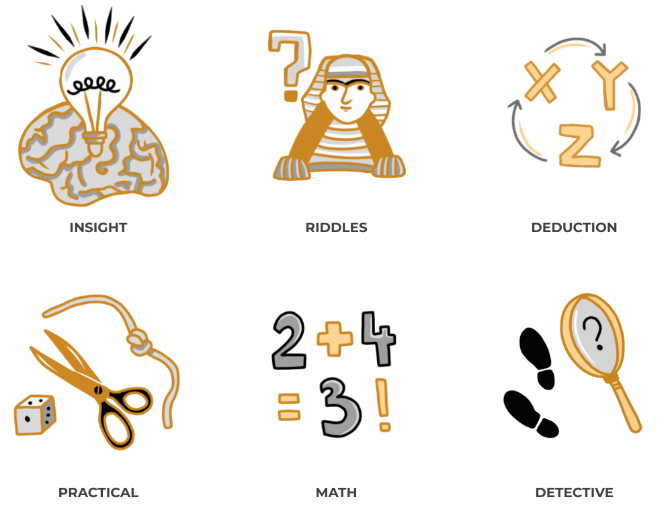
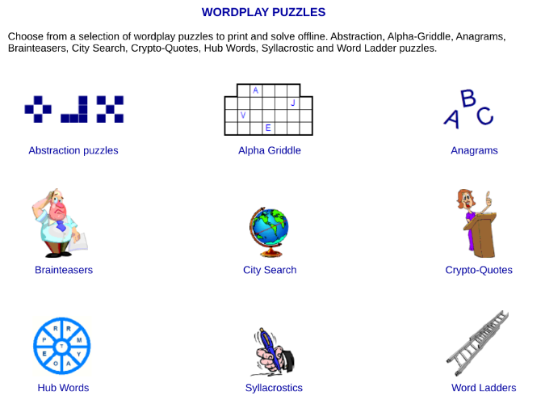
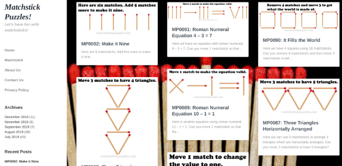
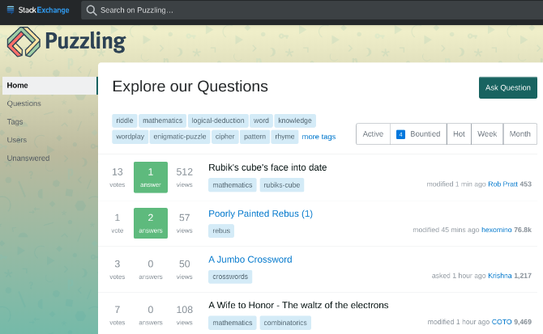
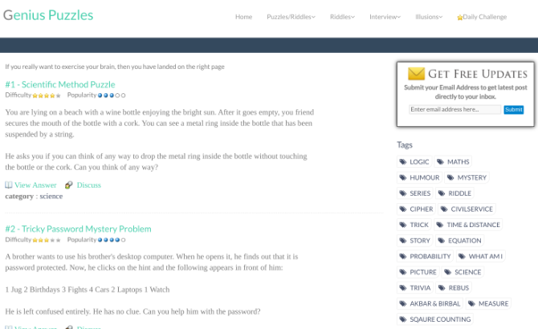

5 Best Puzzle Sites for Logic Riddles and Lateral Thinking Brain Teasers
Much like your body, your mind too needs a regular workout to remain fighting fit. These websites are full of free puzzles, riddles, and brain-teasers to activate those brain cells.
Many studies have shown that having a sharper brain in later life is linked to regularly solving word and number puzzles. Meanwhile, coming up with solutions to riddles and brain-teasers will develop your lateral thinking skills.
But more than anything else, puzzles are a fun and entertaining way to give your mind a little bit of exercise for free.
1. Puzzle Prime(Web): Large Variety and Collection of Brain Teasers

Puzzle Prime is choc-a-bloc with all types of puzzles and brain teasers. The website also hosts a forum for puzzle-related discussions as well as a fun activity center with webcomics, jokes, and other entertainment. But the brain teasers are the main attraction.
If you fancy yourself to be a great detective like Sherlock Holmes, try Puzzle Crime. This is an interactive story with a new clue to solve at each level, as you embark on a journey to figure out a whodunnit. It’s a fun activity for both adults and kids.
There’s a separate section for Casual Puzzles, which include mazes, rebuses, hidden object puzzles, and movie conundrums. All of these are printable activities for children, but I have to admit, they’re fun for grown-ups too.
2. Puzzle Choice (Web): Classic Printable Puzzles

You don’t always want to solve puzzles online. If you want to print them out as activities for children (or as a party or trip activity for adults), Puzzle Choice has some of the best classic brain teasers available for free.
There are nine categories to print from, namely crossword, word search, sudoku, logic puzzles, brainteasers, number, wordplay, quizzes, and kids’ games. None of the categories have a huge collection, but the variety of printables is large enough to keep anyone occupied and entertained for a few days.
3. Matchstick Puzzles (Web): Logic and Lateral Thinking Classics

One of the classic forms of brain teasers is to use match sticks to set a difficult problem that requires either logic or lateral thinking. In case you’ve never seen one before, it usually takes the form of matchsticks placed in a certain shape, and you have to move or remove some to meet the objective.
Matchstick Puzzles is a large collection of these problems, including both famous problems as well as original ones. There are currently 92 different riddles, each showing the arrangement of the sticks and asking a question
4. Puzzling Stack Exchange (Web): Forum for Daily Puzzles

Question-answer platform Stack Exchange hosts a dedicated forum called Puzzling. Puzzlers ask questions, answer tough riddles, and even try to come up with solutions for unanswered mysteries. It’s an amazing community for anyone interested in puzzles.
The website posts new questions every day. The questions are diverse, hitting basic logic, math, and wordplay, along with advanced topics like mathematics, programming, design, science, and much more. The presentation is interesting too, letting commenters hide their answers to avoid spoilers. Mouse over any comment to reveal the solution offered.
5. Gpuzzles (Web): Interview Puzzles by Google, Apple, and Others

Tech startups and other modern companies are famous for asking tough puzzles in interviews when hiring a new candidate. Many of these questions have gone viral as a way to test your intelligence. Genius Puzzles, or Gpuzzles, collects these interview puzzles in one place, along with a collection of other riddles and brain teasers.
The interview puzzles are organized by company names, which include Google, Apple, Microsoft, Amazon, Flipkart, Samsung, Yahoo, Adobe, Oracle, and Intel. Each of the questions has an answer as well, but you can also dive into the comments to see alternative solutions and lateral thinking by others.
Apart from interview questions, Gpuzzles hosts a variety of puzzles and riddles, as well as a cool collection of inexplicable illusions.The Daily Challenge is a fresh puzzle every day. The answer is revealed the next day, giving you the time to come up with a solution and perhaps discuss it in the comments